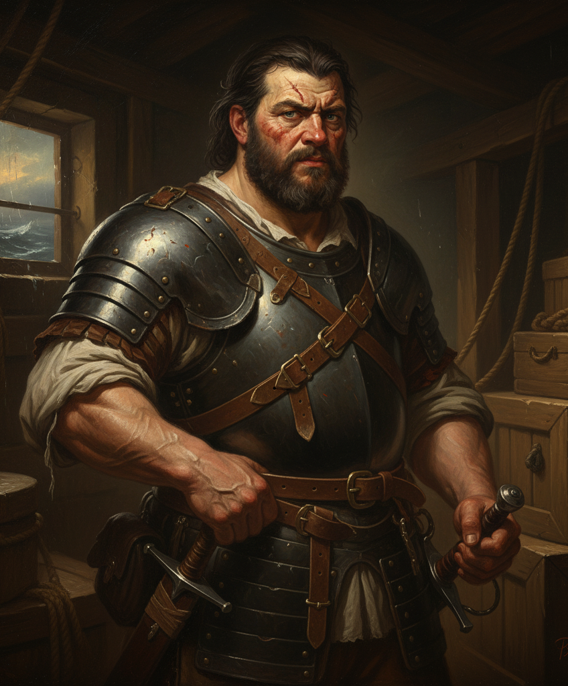
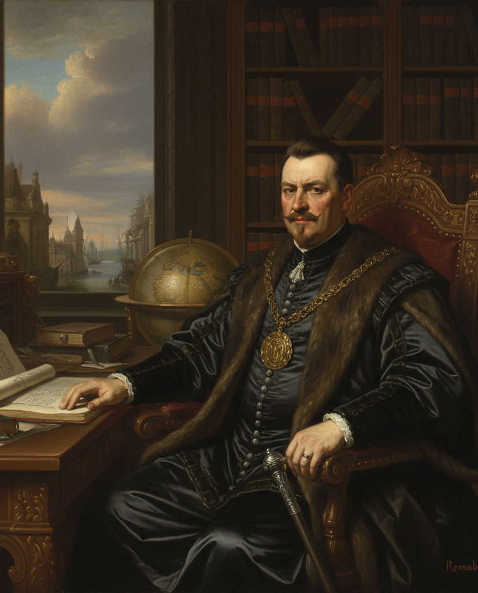

<main>
    <section>
        <div class="about-book">
            <h1>The Devil and The Dark Water</h1>
            <div class="book-content-wrapper">
                
                <div class="book-details">
                    <p><strong>autor:</strong> Stuart Turton</p>
                    <p>gênero: Mistério, Suspense, Ficção histórica</p>
                    <p><strong>resumo:</strong> A tranquilidade de uma viagem marítima em 1634 transforma-se em um pesadelo. A bordo do navio Saardam, um detetive acusado de traição é escoltado por seu fiel guarda-costas quando eventos inexplicáveis começam a ocorrer: símbolos desenhados em sangue, vozes que ecoam no escuro e mortes sem explicação. Enquanto o medo e a superstição tomam conta da tripulação, a dúvida se impõe — há realmente um demônio a bordo ou o verdadeiro mal é humano? Com uma atmosfera densa e histórica, Turton combina mistério, terror e intriga de forma magistral, conduzindo o leitor a uma jornada repleta de tensão e segredos em alto-mar.</p>
                </div>
            </div>
        </div>

         <article>
        <h2 class="subtitle">Resenha</h2>
        <p class="text">Publicado em 2020, The Devil and the Dark Water, de Stuart Turton, é uma obra que combina com maestria ficção histórica, mistério e terror psicológico. Ambientado em 1634, o enredo se passa a bordo do navio Saardam, que parte de Batávia rumo a Amsterdã, carregando passageiros da Companhia Holandesa das Índias Orientais.</p>
        <p class="text">Entre os tripulantes encontra-se Samuel Pipps, um célebre detetive acusado de traição, e seu fiel guarda-costas, Arent Hayes, que busca provar sua inocência. A rotina da viagem é interrompida quando fenômenos sobrenaturais começam a ocorrer: símbolos misteriosos, vozes sombrias e mortes inexplicáveis. A bordo, instala-se um clima de medo e desconfiança, e a fronteira entre o real e o sobrenatural torna-se cada vez mais tênue.</p>
        <p class="text">Turton constrói uma narrativa densa e envolvente, explorando a natureza do medo e da crença, ao mesmo tempo em que desenvolve uma investigação repleta de reviravoltas. O autor utiliza o cenário histórico com precisão, recriando o ambiente opressivo e supersticioso do século XVII, onde razão e fé entram em constante conflito. A trama, marcada pelo isolamento em alto-mar, provoca no leitor uma sensação de claustrofobia e mistério, sustentada por personagens complexos e por uma escrita elegante e cinematográfica.</p>
        <p class="text">A cada capítulo, novas dúvidas surgem, levando o leitor a questionar se o mal presente na história é realmente sobrenatural ou fruto das próprias ações humanas. Em síntese, The Devil and the Dark Water é uma leitura instigante, capaz de unir o suspense de um romance policial à atmosfera sombria de um terror gótico, resultando em uma obra original, inteligente e profundamente imersiva.</p>

        <h2 class="subtitle">Personagens</h2>
        
        
        
        
    </article>
    </section>
</main>